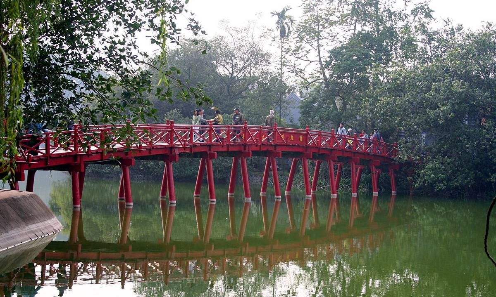
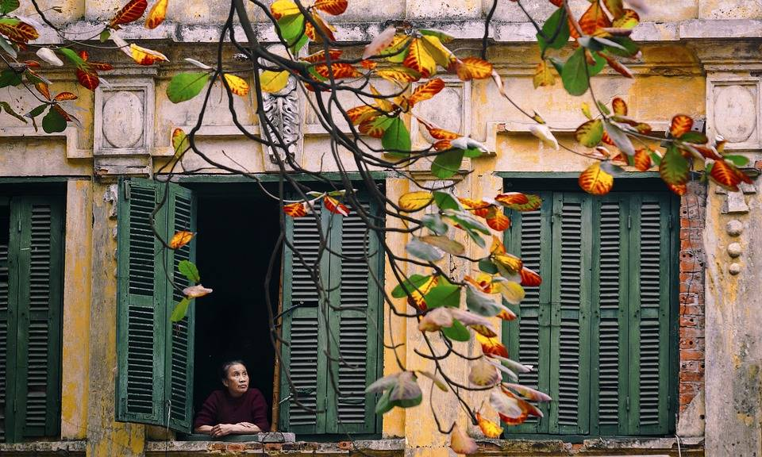
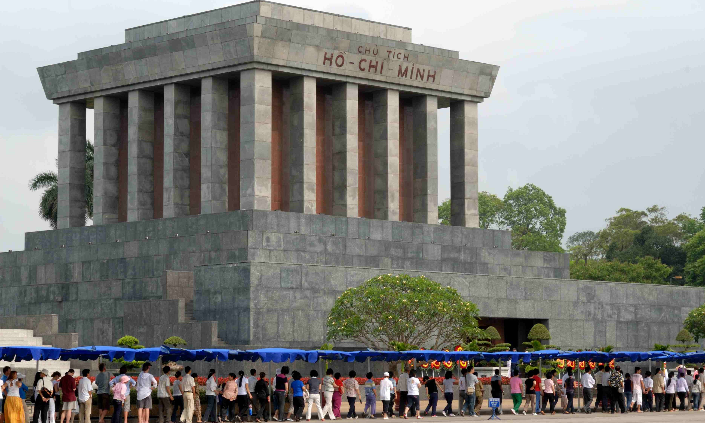

Đến Hà Nội chơi gì?
Dạo chơi ở Hồ Hoàn Kiếm
Người dân Hà Nội xem hồ Hoàn Kiếm là “lối thoát nhỏ khỏi cuộc sống vội vã". Đến đây vào buổi sáng, du khách dễ dàng bắt gặp hình ảnh các nhóm cụ ông, cụ bà cùng nhau tập Thái Cực Quyền. Khi đêm về, hồ Hoàn Kiếm sống động hơn dưới ánh đèn đường rực rỡ.
Chụp ảnh ở phố cổ
Đến du lịch tại Hà Nội, không thể không đến thăm "36 phố phường", hay còn gọi là "Phố cổ Hà Nội". Nơi đây quy tụ tất tần tật các hoạt động vui chơi, giải trí, từ tham quan kiến trúc từ thời Pháp thuộc đến dạo phố mua sắm, ăn uống.
Viếng lăng Bác
Từ năm 1975, Lăng Bác đã trở thành nơi yên nghỉ của cố chủ tịch Hồ Chí Minh, vị cha già dân tộc. Lăng Bác cao 21.6 mét, rộng 41,2 mét, nổi bật bởi nhiều cột đá granite màu xám uy nghiêm. Là người Việt Nam, bạn nhất định phải đến đây ít nhất một lần để hiểu hơn về vị lãnh tụ vĩ đại nhất trong lịch sử.
Tham quan bằng xe máy

Với mật độ xe cộ dày đặc, đi xe máy ở Hà Nội là cách nhanh nhất để cảm nhận cuộc sống thường nhật của người dân địa phương. Đường phố Hà Nội tuy phức tạp nhưng lại mang sắc màu cổ kính và có rất nhiều điểm check-in “đắc địa".